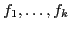
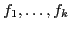
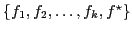
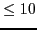
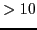
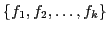

Among the experiments we have run, those inputs relating specifically to bounded model checking benchmarks have been obtained from the output of the bmc program obtainable from Carnegie Mellon University. That program inputs a model checking problem and a number of time steps and outputs a propositional logic formula representing the BMC problem in three formats: a large propositional logic formula, three-address code representing the parse tree for that formula, and a CNF translation of the formula. Program bmc internally represents all formulas recursively as
We use bmc to generate three-address and CNF inputs directly, instead of taking already generated CNF formulas ``off the shelf'' so we have equivalent three-address and CNF data. Thus, times we report for zChaff, Berkmin, and Siege may differ from published times.
The largest propositional logic formula output by bmc is a conjunction of smaller formulas, so the obvious course for SBSAT is to read in each of those smaller formulas as a BDD. Nevertheless, for some of the bmc outputs, those propositional logic formulas were much too large even to store as BDDs. Of course, we also did not want to use the three-address code or the CNF representation directly, since that would negate the benefits of SMURFs which are to retain potentially exploitable domain-specific relationships. Our current approach is successful in spite of being amazingly simplistic.
(a) Compute all projections  of the BDD onto 10-variable
subsets of its variable set (see
Section 10.5 for the meaning of projection).
of the BDD onto 10-variable
subsets of its variable set (see
Section 10.5 for the meaning of projection).
(b) Simplify the  's against each other
and delete resultant
's against each other
and delete resultant  's which
become True. Below we call the final simplified
's which
become True. Below we call the final simplified  's
.
's
.
Note that logically implies each  ; we can think of them
as ``approximations'' to , in the sense that each is false on
some, but probably not all, of the truth assignments on which
is false.
; we can think of them
as ``approximations'' to , in the sense that each is false on
some, but probably not all, of the truth assignments on which
is false.
(c) Recall that the goal is to replace with a set of smaller
BDD's. Now is logically equivalent to the conjunction of
the set
 where
If has  variables, we replace with . If has  variables, we replace with  plus the translation of to CNF. (Typically, is satisfied in most truth assignments, so its CNF translation should be fairly short.)
Again, this procedure is simplistic. We hope in the future to find a better algorithm.